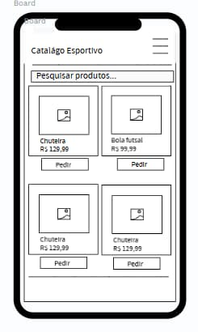
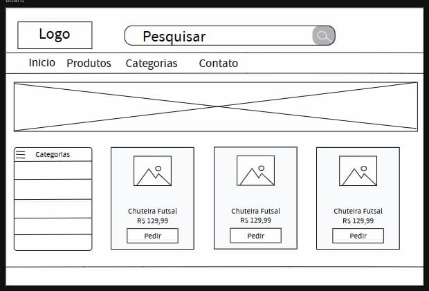

Nome do Site
Catálogo Perowba Sports
O nome foi escolhido para identificar uma loja virtual especializada em produtos esportivos, facilitando o reconhecimento da marca pelos clientes.
Finalidade do Site
O site tem como objetivo apresentar produtos esportivos, como chuteiras, bolas de futebol e outros acessórios, exibindo imagens, descrições e preços. Os clientes poderão escolher os produtos e realizar pedidos diretamente pelo WhatsApp.
Cenários
Cenário 1
Um cliente deseja comprar uma chuteira de futebol. Como ele pode consultar os modelos disponíveis e seus preços?
Cenário 2
Um cliente encontrou uma bola de futebol no catálogo. Como pode fazer um pedido diretamente pelo WhatsApp?
Cenário 3
Um cliente deseja saber se determinado produto está disponível em seu tamanho. Onde poderá encontrar essa informação?
Esquema de Cores
Laranja - #FF6600
O laranja será utilizado nos botões de pedido, nos destaques e em elementos que chamem a atenção do cliente.
Preto - #000000
O preto será utilizado no cabeçalho, nos títulos e em elementos de navegação, transmitindo uma identidade esportiva moderna.
Branco - #FFFFFF
O branco será utilizado no fundo das páginas e dos cartões de produtos, facilitando a leitura das informações.
Tipografia
Montserrat
A fonte Montserrat será utilizada nos títulos principais, nos nomes das seções e nos títulos dos produtos, proporcionando uma aparência moderna e esportiva.
Roboto
A fonte Roboto será utilizada nos parágrafos, nas descrições dos produtos, nos preços e nos botões, facilitando a leitura das informações.
Wireframes da Página Inicial
Visualização para dispositivos móveis
Este wireframe apresenta a organização dos elementos da página inicial em telas pequenas, priorizando a busca e a visualização dos produtos.

Visualização para computadores
Este wireframe apresenta a organização dos elementos da página inicial em telas grandes, aproveitando o espaço disponível para exibir a navegação, as categorias e os produtos.
